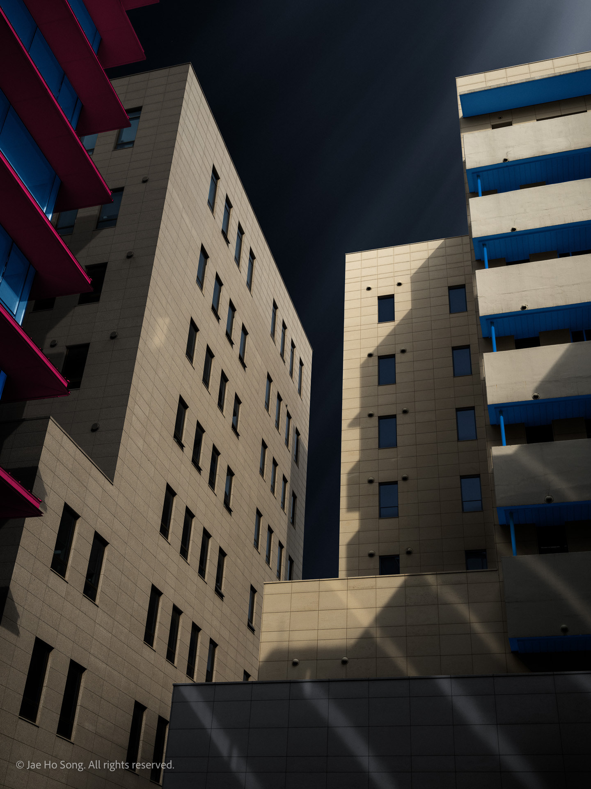
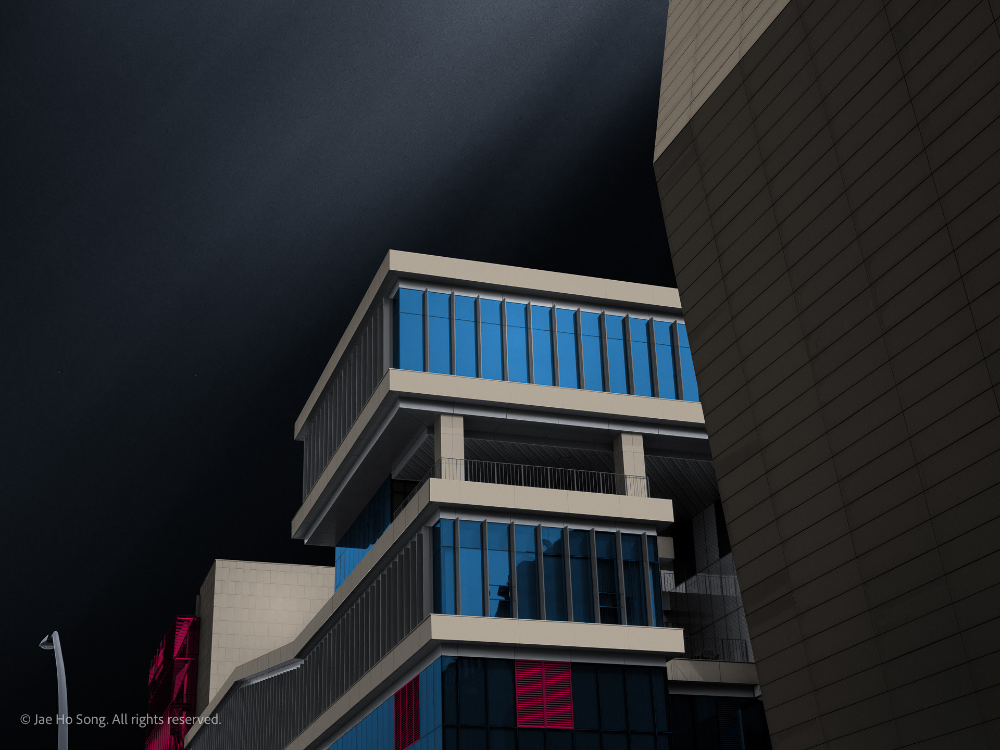
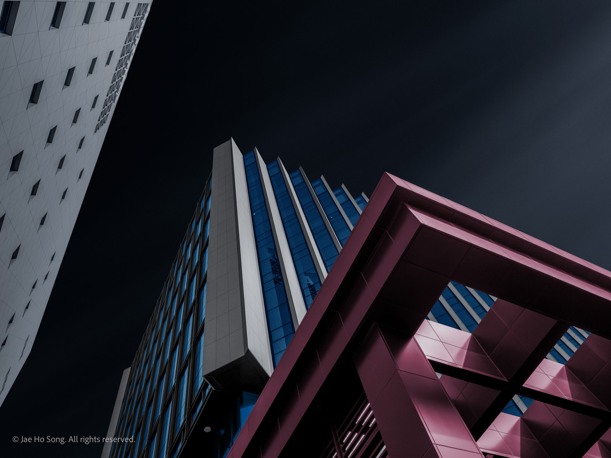
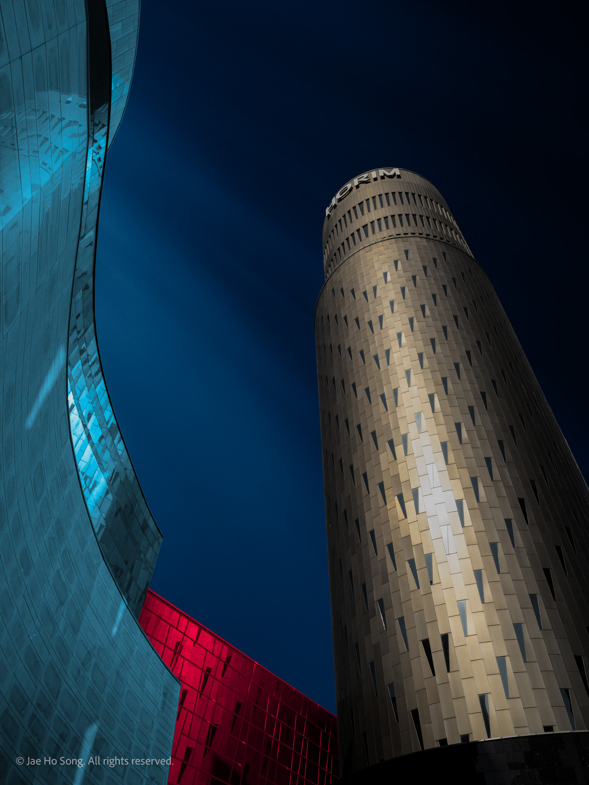
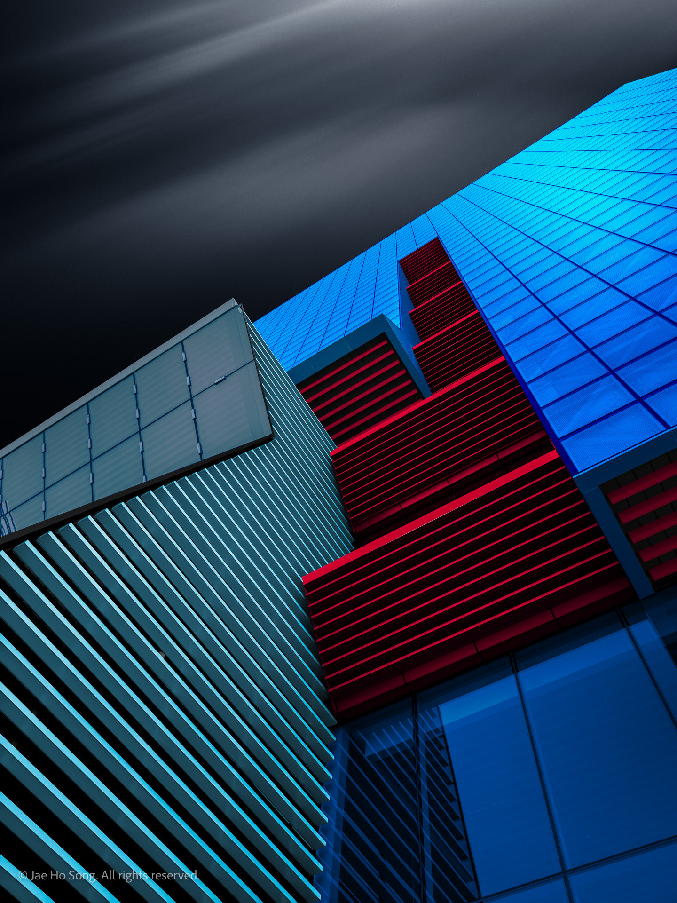
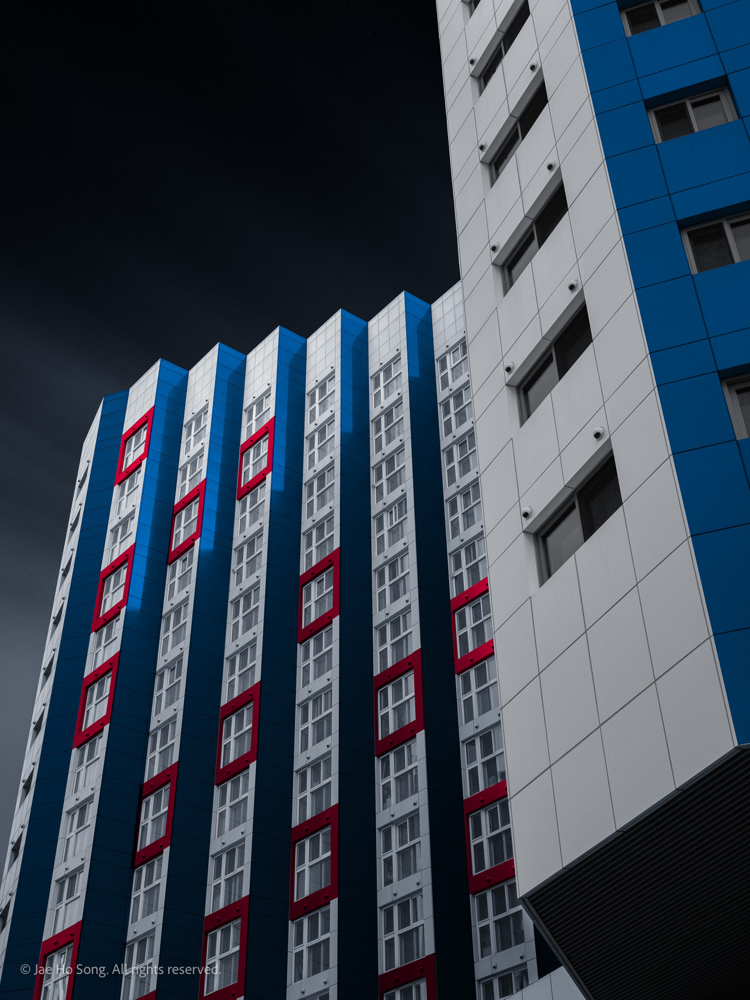

Digital Art/ Monolith 2023 Large view Grid view  Monolith: No. 1, 2023  Monolith: No. 2, 2023  Monolith: No. 3, 2023 Monolith: No. 4, 2023  Monolith: No. 5, 2023  Monolith: No. 6, 2023 Monolith: No. 7, 2023  Monolith: No. 8, 2023 Monolith: No. 1, 2023 Monolith: No. 2, 2023 Monolith: No. 3, 2023 Monolith: No. 4, 2023 Monolith: No. 5, 2023 Monolith: No. 6, 2023 Monolith: No. 7, 2023 Monolith: No. 8, 2023 ← Previous series Gung Next series → Fragment ‹Previous seriesGung›Next seriesFragment